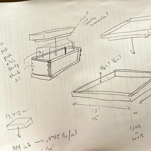
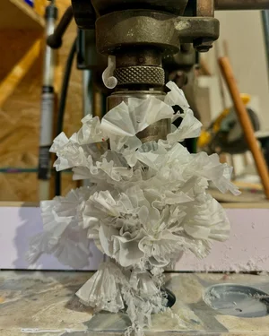
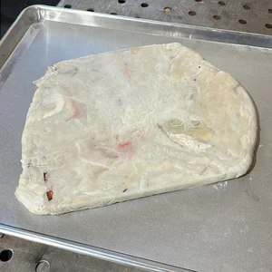
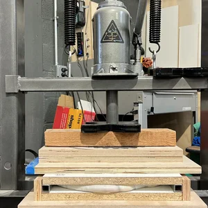
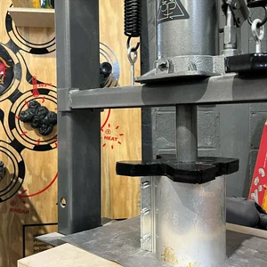
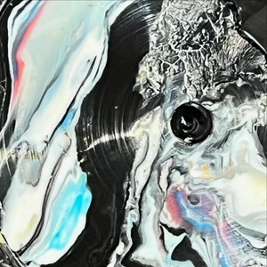
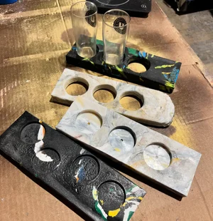
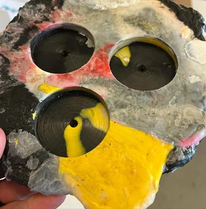
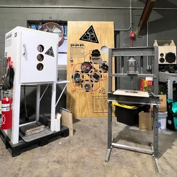
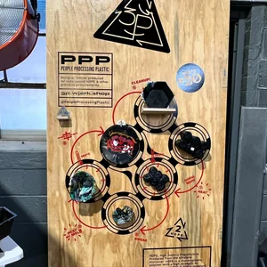

Passionate people performing practical plastic processing, producing prized products, preventing pollution proliferation, and progressing a pristine planet.
Chris Attenborough and I started 3P on our own in fall 2021. Union Craft Brewing was collecting the plastic carriers that hold its beer cans together, and we wanted to do something with them. The carriers are HDPE, the same plastic as milk jugs.
It was part of a bigger idea I call Signs Signaling Sustainability: design that makes something about sustainability tangible, and gives you a reason to explain it. For 3P, that meant performing the process in public, as a chance to show why plastic is a problem and how recycling could work better.
MICA’s product design department joined later, and 3P became the spine of a circular economy course there. I taught it in spring 2024. Justin Beitzel taught it in spring 2026.
Plastic can do almost anything, and much of it can be recycled. Almost none of it is. It’s worth so little that no one collects it properly, so it ends up in nature, where it’s poison as much as clutter.
Our approach comes from Precious Plastic, an open-source project that publishes plans for machines that grind and melt found plastic into new material. We built our versions from as much found material as we could. The oven started as a home oven, stripped of its case and rebuilt. The grinder got new steel teeth, and everything else came from whatever was on hand. We made molds as we needed them, often from kitchen equipment that could already take the heat.
The whole station sits on pallets and travels. It processes plastic where the plastic is, and it stays simple enough that anyone can run it. We’re still working out what’s worth making: what benefits from being HDPE, like renovation parts and everyday objects, and what can be molded without complicated tooling.
Grinding, melting, kneading, pressing. Done in public, the process mattered more than any one object it produced.
The machines keep coming. Product design has found and collected several injection molding machines, a giant grinder, and a four-by-four-foot sheet press. Karl Williamson, from the department, is still helping. A script for a play about plastic recycling is headed for its own zine.
Still a work in progress.









